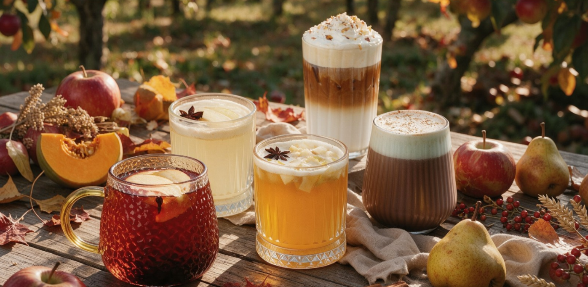
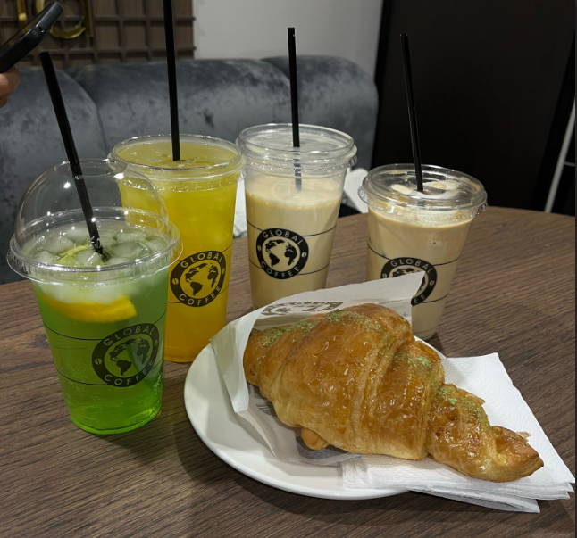

Классические и Фирменные напитки
В Global Coffee мы тщательно отбираем зерна для каждого напитка. Ниже представлен список наших самых популярных позиций с актуальными ценами за разные объемы (200 мл / 300 мл / 400 мл).
- Классика (кофе):
- Эспрессо — 850 ₸ / 950 ₸
- Американо — 890 ₸ / 1090 ₸ / 1290 ₸
- Капучино — 1190 ₸ / 1390 ₸ / 1590 ₸
- Латте — 1190 ₸ / 1390 ₸ / 1590 ₸
- Раф — 1390 ₸ / 1590 ₸ / 1790 ₸
- Фирменные напитки:
- Кокосовое суфле — 1290 ₸ / 1490 ₸ / 1690 ₸
- Латте матча — 1290 ₸ / 1490 ₸ / 1690 ₸
- Какао — 1090 ₸ / 1290 ₸ / 1490 ₸
- Холодные напитки:
- Бамбл — 1390 ₸ / 1590 ₸
- Айс Латте — 1590 ₸ / 1790 ₸
- Смузи (фруктовый, ягодный) — 1590 ₸ / 1790 ₸
Галерея наших напитков
Наши бариста не только варят вкусный кофе, но и создают настоящие шедевры латте-арта.

